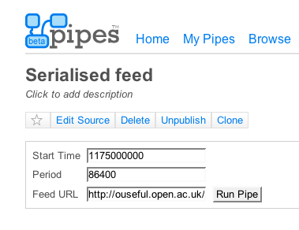
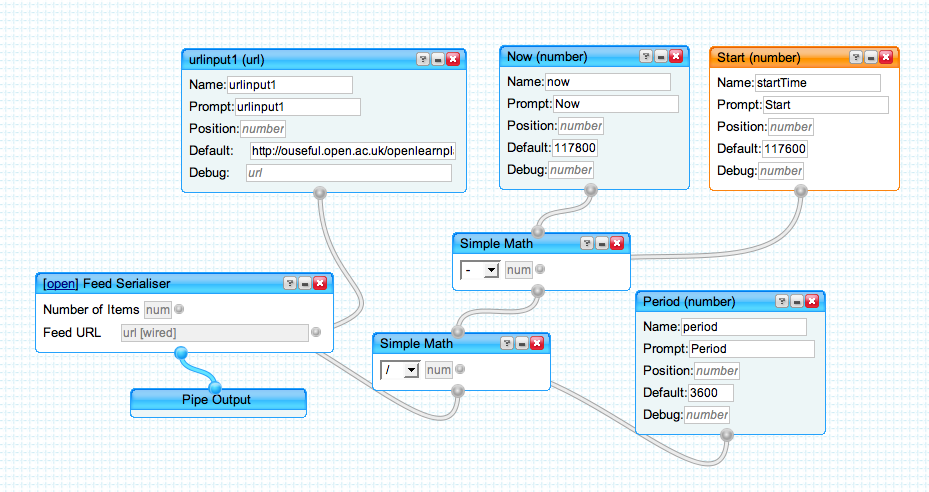
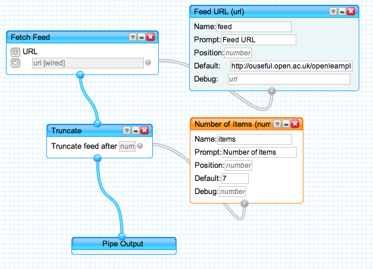
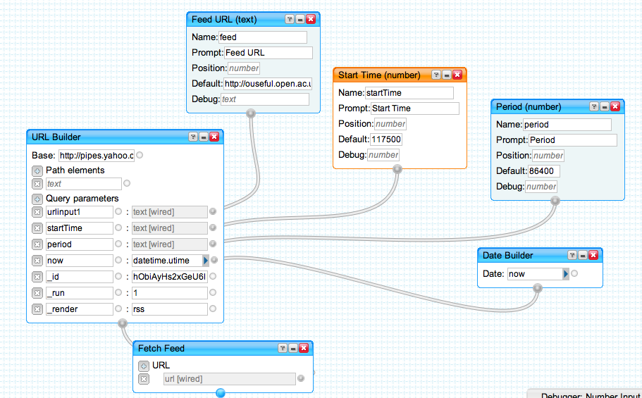

Something I realise I haven't posted about, but which has been sitting in my Yahoo Pipes area for some time, is a "daily feed item" pipe that will deliver items from a static RSS feed - like an OpenLearn Unit RSS feed - according to a daily schedule, personalised according to the time you subscribe to the feed: Serialised Feed Pipe
That is, on subscribing to a feed with a particular "start time" and "duty cycle" (or "period"), you will receive items from the feed according to your own schedule: one feed item per day, for example, or one per week.
This is particularly useful for delivering static feed content, where the feed items do not change. In a "normal" RSS feed, such as a blog RSS feed, the feed contents reflect the most recent blog postings, and as such change whenever a new post is made. In a static feed, the content is fixed and "just" represented using an RSS format, so that subscription models and RSS rendering techniques can be used to syndicate and republish the content. One might imagine abridged versions of books being syndicated in the way, like the BBC Radio 4 "Book of the Week", only delivered as text, via an RSS feed, with one chapter delivered per day. (Of course, "static" podcast feeds can also be serialised and delivered in this way.)
The approach used in the serialised feed pipe is essentially a generalisation of the OpenLearn_daily approach, which allows you to sign up to OpenLearn course feeds and receive a new feed item from a particular unit according to your own schedule.
The pipe takes in a start time (in universal time), a delivery period (one additional feed item will be delivered for each period after the start time - one item a day, for example) and the URL of the feed to be serialised.

Internally, the pipe passes this information - along with the current time - to another pipe that calculates the number of items required in the feed:

The calculation simply subtracts the start time from the current time, and divides it by the specified period.
This pipe then uses yet another internal pipe ("Feed Serialiser") to deliver the specified number of feed items by simply truncating the feed after that number of items have been delivered.

Here's the actual "top level" pipe:

I'll try and provide a web page interface to this over the next week or two, probably by tidying up this very basic "feed cycle" form. I also need to add a couple more parameters in that let the user specify the number of feed items they want in the first delivery, as well as the additional number of feed items delivered in each feed cycle.
Posted by ajh59 at July 18, 2007 05:51 PMSounds interesting: I'm not much of a techie, though, so I'm not sure I understand what this tool does. Does it make it possible for someone to get an RSS feed with elements of an ordinary web page being delivered to them on a regular basis? I know that there are tools that can make RSS feeds from ordinary websites out there, but I assumed that they would only feed updates. The concept of one that will generate a feed out of static content is definitely a powerful one when it comes to delivering a course...
Posted by: Jenny Delasalle at July 19, 2007 03:27 PMWhat the pipe does is take content that has been put into RSS form (for example, a book, or course unit) and alllow people to subscribe to it whenever they want.
They will then get one feed item per day from the day that they personally subscribe to the feed.
tony
Posted by: Tony Hirst at July 24, 2007 11:47 AMIt may not be your department, but the newsletter says that you've added a Spanish course to OpenLearn Daily but the link doesn't work and I can't find any reference to it on the site. The Open Daily page lists 6 feeds in total and you appear to have RSS'd a lot more. The Espacios Publicos unit doesn't seem to mention Open Daily.
Am I just blind?
Posted by: Sylvia at July 24, 2007 02:34 PM